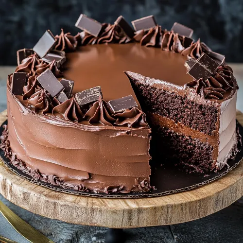

Chocolate cake

Belgian chocolate cake is a rich, indulgent dessert characterized by its dense, moist texture and
intense chocolate flavor, achieved through the use of high-quality Belgian chocolate and unsweetened cocoa powder.
Ingredients:
- Hazelnuts
- Unsalted butter (softened)
- Dutch-process cocoa powder
- Granulated sugar
- All-purpose flour
- Baking soda
- Table salt
- Boiling water
- Packed dark-brown sugar
- Large eggs (room temperature)
- Pure vanila extract
- Chocolate ganache
- Candied hazelnuts and chocolate curls
Recipe:
-
Preheat oven to 350 degrees. Place nuts on a baking sheet. Bake until fragrant and toasted, about 12 minutes.
Transfer to a clean kitchen towel; rub to loosen skins. Butter a 9-by-3-inch springform pan well; coat with cocoa, tapping out any excess.
-
In a food processor, grind nuts with granulated sugar until fine but not pasty;
transfer to a large bowl; stir in the flour, baking soda, and salt.
- In a heat-proof bowl, whisk together cocoa and boiling water until smooth. (Mixture will thicken as it cools.)
-
In the bowl of an electric mixer, cream butter and brown sugar on high until lightened and fluffy, 3 to 4 minutes.
Beat in eggs one at a time until well blended.
-
Stir buttermilk and vanilla into cocoa mixture. Mixing on low, add half of dry ingredients to creamed mixture;
when blended, pour in the cocoa mixture, and add remaining dry mixture, mixing just until incorporated.
Scrape batter into prepared pan, smooth top. Bake 1 hour to 1 hour and 10 minutes, until a tester inserted in the center comes out clean.
Let cool in pan for 10 minutes; remove from pan and cool completely. Place cooled cake on a 9-inch cardboard round.
-
Place half the ganache in a bowl; place in a larger bowl of ice water;
whip with a balloon whisk until lighter in color and spreadable, removing bowl from ice bath and returning it as necessary.
-
Spread the whipped ganache smoothly on top and sides of cooled cake, and chill the cake.
Gently stir remaining ganache every 5 minutes until thickened and cool.
-
Place cake (still on cardboard round) on a wire rack over a sheet of waxed or parchment paper.
Working with a small ladle, pour ganache over top of cake, moving the ladle in a circular fashion while in contact with the cake,
letting the ganache run down sides. Scrape up excess and reserve for another use.
Let cake stand at room temperature until set. Garnish with nuts and chocolate curls.
Home